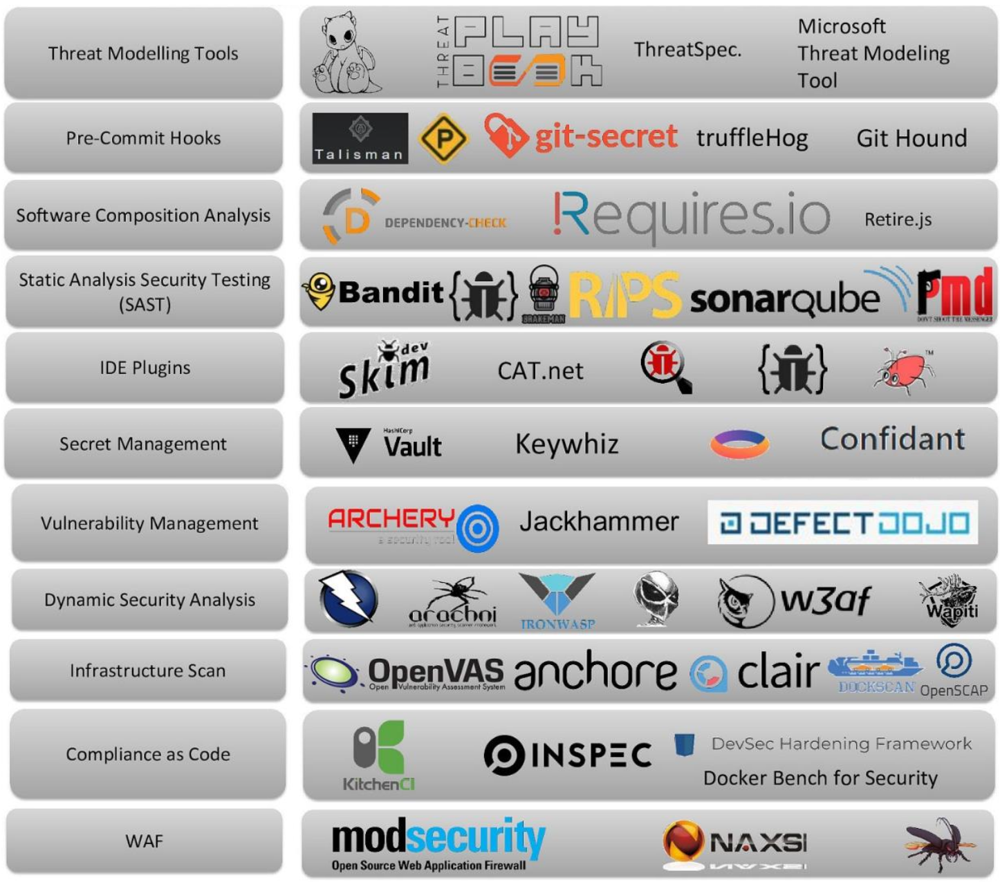
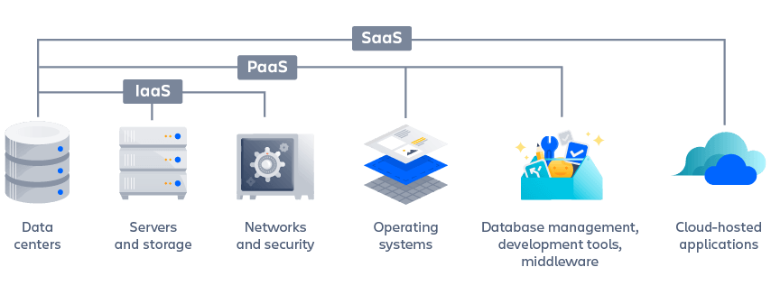

About Documentation Site
This is a MkDocs-powered documentation site for DevOps materials.
MKDocs and site template
This is a MkDocs-powered documentation site for DevOps materials.
Fundamentals
- What is DevOps
- DevOps Frameworks
- Other Concepts
- Microservices
- Operating Systems
- Software Development
- Cloud Computing
Tutorials
Git
Programming
Template
About Documentation Site Template
Welcome to your MkDocs-powered documentation site, built using MkDocs with the Material theme.
Documentation Site Template
Welcome to your MkDocs-powered documentation site! This is the homepage of your documentation built using MkDocs with the Material theme.
Getting Started
Prerequisites
Before you begin, make sure you have:
- Python 3.8 or higher installed
- Git configured with your repository
- Basic knowledge of Markdown
Quick Setup
- Clone or download this template
- Navigate to your project directory
- Run the setup script:
./init_site.sh
That’s it! Your documentation site will be built and served locally at http://127.0.0.1:8000.
Manual Setup (Alternative)
If you prefer to set things up manually:
1. Create Virtual Environment
2. Install Dependencies
3. Configure Your Site
Edit the configuration files in the mkdocs/ directory:
| Configuration File | Description |
|---|---|
| 01-mkdocs-site.yml | Basic site information |
| 02-mkdocs-theme.yml | Theme and appearance settings |
| 03-mkdocs-extra.yml | Social links and extras |
| 04-mkdocs-plugins.yml | Plugin configurations |
| 05-mkdocs-extensions.yml | Markdown extensions |
| 06-mkdocs-nav.yml | Navigation structure |
4. Build Configuration
5. Start Development Server
Adding and Organizing Content
Creating New Pages
To add content to your documentation:
- Create new Markdown files in this
Labs/directory - Add them to the navigation in
mkdocs/06-mkdocs-nav.yml
Example navigation entry:
Content Organization Structure
Here’s how you might organize your documentation:
Labs/
├── README.md # This homepage
├── tutorials/ # Tutorial section
│ ├── README.md # Tutorial overview
│ ├── basic-tutorial.md
│ └── advanced-tutorial.md
├── guides/ # How-to guides
│ ├── README.md # Guides overview
│ └── installation-guide.md
├── reference/ # Reference documentation
│ ├── README.md # Reference overview
│ ├── api-reference.md
│ └── configuration.md
└── assets/ # Images and other assets
├── images/
│ ├── logo.png
│ └── screenshots/
└── stylesheets/
Adding Images and Assets
- Place images in
Labs/assets/images/ - Reference them in your Markdown:
- Add custom stylesheets to the
Labs/assets/stylesheets/directory
Customization
Changing Theme Colors
Edit mkdocs/02-mkdocs-theme.yml to customize the appearance:
Available colors: red, pink, purple, deep purple, indigo, blue, light blue, cyan, teal, green, light green, lime, yellow, amber, orange, deep orange, brown, grey, blue grey
Adding Custom CSS
- Create CSS files in
Labs/assets/stylesheets/ - Reference them in
mkdocs/03-mkdocs-extra.yml:
Template Features
This documentation template includes many powerful features:
Markdown Extensions
- Admonitions: Create beautiful callout boxes
- Code highlighting: Syntax highlighting for code blocks
- Tables: Enhanced table formatting
- Mermaid diagrams: Create flowcharts and diagrams
- Math notation: LaTeX-style mathematical expressions
Navigation Features
- Tabs: Top-level navigation tabs
- Search: Fast client-side search
- Table of contents: Automatic TOC generation
- Navigation sections: Collapsible navigation sections
Code Examples
Here’s a code block with syntax highlighting:
def hello_world():
"""A simple hello world function."""
print("Hello, World!")
return "Hello, World!"
# Call the function
hello_world()
Admonitions
MkDocs Material supports many different types of admonitions. Here are all the available types:
Note
This is a note admonition. Use it to highlight important information.
Abstract/Summary/TL;DR
This is an abstract admonition. Great for summaries or TL;DR sections.
Info/Todo
This is an info admonition. Use it for informational content.
Tip/Hint
This is a tip admonition. Perfect for sharing helpful hints and best practices!
Success/Check/Done
This is a success admonition. Use it to highlight successful outcomes or completed tasks.
Question/Help/FAQ
This is a question admonition. Great for FAQs or help sections.
Warning/Caution/Attention
This is a warning admonition. Use it to call attention to potential issues.
Failure/Fail/Missing
This is a failure admonition. Use it to highlight failures or missing items.
Danger/Error
This is a danger admonition. Reserve for critical warnings and errors.
Bug
This is a bug admonition. Perfect for documenting known issues.
Example
This is an example admonition. Use it to provide code examples or demonstrations.
Quote/Cite
This is a quote admonition. Use it for citations or important quotes.
Collapsible Admonitions
You can make admonitions collapsible by using ??? instead of !!!:
Collapsible Note (Click to expand)
This admonition starts collapsed. Users can click to expand it.
Collapsible but Open by Default
This admonition is collapsible but starts expanded. Use ???+ for this behavior.
Inline Admonitions
You can also create inline admonitions that flow with the text:
Inline Info
This is an inline admonition that takes up less space.
Inline at End
This inline admonition is positioned at the end of the line.
Regular text continues here, flowing around the inline admonitions above.
!!! info inline "Inline Info"
Inline admonition content
!!! tip inline end "Inline at End"
End-positioned inline content
Custom Titles
You can customize the title or remove it entirely:
This admonition has no title - just leave the quotes empty.
🎉 Custom Title with Emoji
You can use emojis and custom text for titles.
Mermaid Diagram Example
mermaid
graph LR
A[Start] --> B{Decision}
B -->|Yes| C[Action 1]
B -->|No| D[Action 2]
C --> E[End]
D --> E
Deployment
GitHub Pages (Recommended)
- Push your repository to GitHub
- Enable GitHub Pages in repository settings
- Use GitHub Actions for automatic deployment
Manual Deployment
Deploy your site manually using:
This will build and deploy your site to GitHub Pages automatically.
Next Steps and Resources
- Customize the site configuration in the
mkdocs/directory - Add your own content by creating new Markdown files
- Update the navigation to reflect your content structure
- Deploy your site to GitHub Pages or your preferred hosting platform
Learning Resources
- Explore the Material theme documentation
- Learn about MkDocs plugins
- Check out Markdown extensions
Happy documenting! 📚✨
GitHub Avatars Setup Guide
This guide explains how to add GitHub avatars of committers to your MkDocs site.
Overview
The GitHub avatars feature displays profile pictures of contributors who have committed changes to each page in your documentation. This helps readers see who has worked on specific content.
Current Setup
Your MkDocs site is already configured with GitHub avatars! Here’s what’s implemented:
1. Plugin Configuration
In your mkdocs.yml, the git-committers plugin is configured:
plugins:
- git-committers:
branch: main
docs_path: Labs # set if your docs folder is not root
enabled: true
repository: nirgeier/mkdocs
2. Template Integration
The overrides/partials/source-file.html template includes the render_committers macro that:
- Shows up to 4 GitHub avatars per page
- Displays a “+X” indicator for additional contributors
- Links avatars to contributor GitHub profiles
- Shows tooltips with GitHub usernames
3. CSS Styling
Custom CSS styles in Labs/assets/stylesheets/theme.css provide:
- Circular avatar styling
- Hover effects with scaling
- Dark/light mode support
- Responsive design for mobile devices
- Tooltip functionality
Features
Avatar Display
- Circular avatars: 1.6rem (25.6px) diameter by default
- Hover effects: Slight scale animation on hover
- Tooltips: Show GitHub username on hover
- Responsive: Smaller on mobile devices
GitHub Integration
- Auto-fetching: Automatically fetches contributor data from GitHub
- Rate limiting: Handles GitHub API rate limits gracefully
- Caching: Caches avatar data for performance
Customization Options
- Size variants: Support for larger avatars with
.md-source-file--largeclass - Color themes: Automatic adaptation to light/dark themes
- Border styling: Subtle borders that adapt to the theme
Advanced Configuration
Adding GitHub Token
To avoid API rate limits, you can add a GitHub token:
- In mkdocs.yml:
- Or as environment variable:
Customizing Avatar Count
To show more than 4 avatars, modify the template in overrides/partials/source-file.html:
Custom Avatar Sizes
Add these CSS classes to customize avatar sizes:
/* Large avatars for important pages */
.md-source-file--large .md-author {
height: 3rem;
width: 3rem;
}
/* Small avatars for compact layouts */
.md-source-file--compact .md-author {
height: 1.2rem;
width: 1.2rem;
}
Troubleshooting
Avatars Not Showing
- Check plugin status: Look for “git-committers plugin ENABLED” in build output
- Verify repository: Ensure the repository name in config matches GitHub
- Check branch: Verify the branch name is correct
- API limits: Add a GitHub token if you see rate limit warnings
Styling Issues
- CSS not loading: Verify
extra_csspath in mkdocs.yml - Dark mode: Check that dark mode styles are defined
- Mobile display: Test responsive behavior on different screen sizes
Example Output
When working correctly, you’ll see:
- Small circular avatars at the bottom of each page
- Hover effects when mousing over avatars
- Clickable links to contributor profiles
- Proper scaling on different devices
Next Steps
- Test the setup: Visit your site and check avatar display
- Add GitHub token: To avoid API rate limits
- Customize styling: Adjust sizes and colors to match your theme
- Monitor performance: Check build times and API usage
The GitHub avatars feature is now active on your site and will automatically display contributor information for all pages in your documentation!
Installation Guide
- Use the built-in script init-script.md to build the documentation site.
init_site.sh Script
The init_site.sh script is the heart of this MkDocs template’s automation. It intelligently sets up your documentation site by detecting your repository information and configuring everything automatically.
Script Overview
The script performs a complete setup workflow:
- Environment Detection - Identifies your Git repository and GitHub information
- Configuration Management - Updates MkDocs configuration with your specific details
- Environment Setup - Creates Python virtual environment and installs dependencies
- Navigation Building - Generates dynamic navigation based on your content
- Site Building - Builds and serves your documentation
Core Functions Breakdown
1. Git Repository Detection
parse_git_remote() {
local remote_url
if ! remote_url=$(git remote get-url origin 2>/dev/null); then
print_error "Could not get git remote URL"
exit 1
fi
# Parse different URL formats:
# SSH: git@github.com:owner/repo.git
# HTTPS: https://github.com/owner/repo.git
if [[ $remote_url =~ git@github\.com:([^/]+)/([^.]+)\.git ]]; then
REPO_OWNER="${BASH_REMATCH[1]}"
REPO_NAME="${BASH_REMATCH[2]}"
# ... additional format handling
}
What it does: - Extracts GitHub repository information from your Git remote URL - Supports both SSH and HTTPS Git URL formats - Automatically determines repository owner and name - Provides fallback values if parsing fails
2. Dynamic URL Generation
generate_urls() {
SITE_URL="https://${REPO_OWNER}.github.io/${REPO_NAME}/"
REPO_URL="https://github.com/${REPO_OWNER}/${REPO_NAME}"
}
What it does: - Generates GitHub Pages URL automatically - Creates repository URL for documentation links - Ensures consistent URL formatting
3. Configuration File Updates
update_yaml_field_if_empty() {
local field_name="$1"
local field_value="$2"
local config_file="$3"
if grep -q "^${field_name}:$" "$config_file"; then
sed -i.bak "s|^${field_name}:$|${field_name}: ${field_value}|g" "$config_file"
else
print_warning "$field_name already has a value, skipping"
fi
}
What it does: - Only updates empty configuration fields - Preserves existing custom configurations - Creates backup files automatically - Uses safe sed operations for cross-platform compatibility
4. Modular Configuration Assembly
build_mkdocs_config() {
print_info "Building final mkdocs.yml from individual config files..."
if ! cat mkdocs/*.yml > mkdocs.yml 2>/dev/null; then
print_error "Failed to concatenate mkdocs config files"
exit 1
fi
}
What it does:
- Combines all modular configuration files into final mkdocs.yml
- Maintains separation of concerns (site info, theme, plugins, etc.)
- Enables easy customization of individual aspects
5. Dynamic Navigation Integration
build_dynamic_navigation() {
print_info "Building dynamic navigation structure..."
if [[ -f "build_nav.sh" ]]; then
if ./build_nav.sh --sort numeric; then
print_success "Dynamic navigation built successfully"
else
print_warning "Dynamic navigation build failed, using existing navigation"
fi
fi
}
What it does: - Automatically generates navigation based on content structure - Uses numeric sorting for ordered content - Gracefully handles navigation build failures - Integrates with the separate navigation builder script
Configuration Files Logic
The script works with 6 modular configuration files:
| Configuration File | Category | Description |
|---|---|---|
01-mkdocs-site.yml |
Site Basics | • Site name, URL, and description • Repository information • Basic metadata |
02-mkdocs-theme.yml |
Theme Configuration | • Material theme settings • Color schemes and palettes • Navigation features • Fonts and icons |
03-mkdocs-extra.yml |
Extra Features | • Social media links • GitHub integration buttons • Custom CSS and JavaScript • Additional metadata |
04-mkdocs-plugins.yml |
Plugin Configuration | • Search functionality • Git integration plugins • PDF export capabilities • Site optimization plugins |
05-mkdocs-extensions.yml |
Markdown Extensions | • Code highlighting • Admonitions and callouts • Table enhancements • Diagram support |
06-mkdocs-nav.yml |
Navigation Structure | • Site navigation hierarchy • Page organization • Menu structure |
Environment Setup Logic
Virtual Environment Management
setup_python_env() {
if [[ -d "$VENV_DIR" ]]; then
print_info "Virtual environment found, activating..."
source "$VENV_DIR/bin/activate"
else
print_info "Creating new virtual environment..."
python3 -m venv "$VENV_DIR"
source "$VENV_DIR/bin/activate"
pip install --upgrade pip
pip install -r "$REQUIREMENTS_FILE"
fi
}
Benefits: - Isolated Python environment for your documentation - Automatic dependency installation - Reuses existing environments when available - Upgrades pip to latest version
Error Handling and Safety
Robust Error Management
set -euo pipefail # Exit on error, undefined vars, pipe failures
# Validation functions
validate_yaml() {
# YAML validation with fallbacks
}
# Cleanup on exit
cleanup() {
if [[ -f "$TEMP_NAV" ]]; then
rm -f "$TEMP_NAV"
fi
}
trap cleanup EXIT
Safety Features: - Strict error handling with immediate exit on failures - Automatic cleanup of temporary files - YAML validation before applying changes - Backup creation before modifications
Command Line Options
The script supports several options for different use cases:
./init_site.sh # Full setup and serve
./init_site.sh --no-serve # Setup and build only
./init_site.sh --clean # Clean build and serve
./init_site.sh --verbose # Detailed output
./init_site.sh --help # Show usage information
Workflow Sequence
- Parse Arguments - Process command line options
- Load Environment - Source
.envfile if present - Initialize Workspace - Change to Git root directory
- Parse Git Remote - Extract repository information
- Generate URLs - Create GitHub Pages and repository URLs
- Update Configuration - Modify only empty configuration fields
- Build Configuration - Combine modular config files
- Build Navigation - Generate dynamic navigation structure
- Setup Environment - Create/activate Python virtual environment
- Build Documentation - Generate the documentation site
- Serve Documentation - Start development server (unless
--no-serve)
Customization Points
Environment Variables
Create a .env file to override defaults:
Configuration Override
The script only updates empty fields, so you can pre-configure:
# In mkdocs/01-mkdocs-site.yml
site_name: My Custom Site Name # Won't be overridden
site_url: # Will be auto-generated
Best Practices
- Run from Git Repository Root - Script validates Git context
- Commit Changes First - Script assumes clean Git state
- Review Generated Config - Check
mkdocs.ymlafter first run - Test Locally First - Use
--no-servefor CI/CD environments - Keep Backups - Script creates
.backupfiles automatically
Troubleshooting
Common Issues
Git Remote Not Found:
# Ensure you have a GitHub remote configured
git remote add origin https://github.com/username/repo.git
Python Environment Issues:
Configuration Conflicts:
The init_site.sh script embodies the “convention over configuration” principle, providing intelligent defaults while remaining fully customizable for advanced use cases.
Fundamentals
Fundamentals
Key basic concepts to understand in order to start the DevOps roadmap.
Topics
What is DevOps
- The DevOps lifecycle
- DevOps practices
- 5 Key DevOps principles
- DevOps Engineer
- How to do DevOps
- Operational Readiness
DevOps Frameworks
- CALMS Framework
- Team Topologies
- Team structures
- DevOps Metrics
- DORA Metrics
Other Concepts
- Agile and Scrum
- SRE - Site Reliability Engineering
- DevSecOps
- Platform Engineering
Microservices
- Overview
- Microservices vs. monolithic architecture
- How to build microservices
- Distributed System
- Kubernetes vs. Docker
- Configuration management
- How to tame software sprawl
- Negative velocity: how to lift the complexity limit
- Configuration management tools
- SOA vs. microservices
- Microservices Tools
Cloud Computing
- Containers vs. virtual machines
- Virtual Machine
- Infrastructure as Code (IaC)
- Infrastructure as a service (IaaS)
- Platform as a service (PaaS)
- Containers as a service (CaaS)
- Cloud bursting
- Benefits of Microservices
- Microservices security
- Microservices vs. Web services
- Microservices design patterns
Operating Systems
- Operating System Basics
- Networks Basics
- Linux OS
- Linux Bash Utilities
- Bash Scripting in Linux
- Linux File Directories
- Linux File Permissions
- SSH Key Management
- Vim Editor
Networking
- Internet
- OSI Model
- Protocols
- IP & Ports
- (DNS) Domain Name System
- HTTP/HTTPS
- Load Balancers
Software Development
- Overview
- The Software Development Life Cycle (CDLC)
- Methodologies (Agile → Scrum → jira)
- Models and tools
- Software team collaboration
What is DevOps
DevOps is a hybrid discipline combining the cross-functional domains of software development and operations into an exceptionally collaborative and productive environment of automation, flexible infrastructures, and maximally efficient workflows and processes.
The goal
Enhance the software delivery chain at every stage and meet the increasingly tight requirements in today’s competitive industry.
DevOps Departments
- Development: Developing and testing applications
- Operations: Deploying and maintaining applications on servers
Application Release Process
Have an idea ➡️ Define requirements ➡️ Code ➡️ Test ➡️ Build and Package
⬆️ ⬇️
Improvement ⬅️ Operate and Monitor ⬅️ Deploy ⬅️ Configure the Server
Common DevOps Challenges
- Miscommunication & Lack of Collaboration: Developers can’t deploy/run the app, or don’t consider deployment environments; operations may not know how the app works. Poor documentation can worsen this.
- Conflict of Interest: Developers want rapid changes; operations want stability.
- Security: Security teams must ensure new features don’t compromise the system (DevSecOps).
- Application Testing: Testing teams need to cover all levels and environments, but can’t rely solely on automation.
- Manual Work: Manual configuration and scripting slow down processes and introduce errors.
DevOps Solutions
DevOps engineers aim to remove roadblocks by automating and streamlining processes, step by step.
How DevOps Achieves This
DevOps combines cultural philosophies, practices, and tools to release software faster and with higher quality. The key is frequent collaboration between Dev and Ops teams.
DevOps Lifecycle
- Discover – Explore, organize, and prioritize ideas. Align to strategic goals and customer impact. Agile guides DevOps teams.
- Plan – Adopt agile practices for speed and quality. Break work into smaller pieces for incremental value.
- Code – Development, source code management, code review
- Build – Continuous Integration (CI) tools using version control (e.g., Git) for branching, merging, and workflows in the build process.
- Test – Software testing and performance measurement via CI.
- Package – Package management, artifact repository, deployment configuration
- Release – Change management, version release, automation, releases features frequently and steadily, improving velocity and sustainability.
- Configure – Infrastructure definition and management
- Operate – Manage end-to-end IT service delivery, including design, deployment, and maintenance.
- Monitor & Observe – Continuous monitoring, runtime performance, monitor uptime, speed, and functionality. Notify teams of changes or failures to maintain service.
- Continuous Delivery (CD) – Container orchestration, Infrastructure as Code (IAC), Cloud.
- Continuous Feedback – Evaluate releases and generate reports to improve future releases and incorporate customer feedback.
Infinity Loop
The DevOps lifecycle is often visualized as an infinity loop, symbolizing continuous collaboration and iterative improvement. The eight phases represent processes, capabilities, and tools for development (left side) and operations (right side). Teams collaborate throughout each phase to maintain alignment, velocity, and quality.
5 Key DevOps Principles
- Collaboration: Merge development and operations into a unified team
- Automation: Automate as much of the lifecycle as possible
- Continuous Improvement: Experiment, minimize waste, and optimize delivery
- Customer-Centric Action: Use feedback loops to develop user-focused products
- Create with the End in Mind: Understand customer needs and build holistic solutions
History of DevOps
Origins
- DevOps emerged between 2007–2008 as IT operations and software development communities sought to solve dysfunction in the industry.
- Traditional software development kept developers and operations separate, leading to siloed teams, long hours, botched releases, and unhappy customers.
- Thought leaders like Patrick Debois, Gene Kim, and John Willis helped drive the DevOps movement.
DevOps Framework
Like every movement or philosophy, DevOps frameworks guide practitioners to implement the practices effectively and efficiently.
CALMS Framework
The CALMS Framework (Culture, Automation, Lean, Measurement, Sharing) assesses a company’s ability to adopt DevOps and measures success during transformation.
Culture
- DevOps is a culture change focused on collaboration.
- Product-oriented teams (development, QA, product management, design, operations, etc.) work together.
- Collaboration is fostered by sharing goals and planning together.
- Incident post-mortems focus on improvement, not blame.
- DevOps is everyone’s job, not just one team’s.
Automation
- Eliminates manual work, creates reliable systems, and enables repeatable processes.
- Start with build, test, deploy, and provisioning automation.
- Continuous delivery and configuration as code break down barriers between development and operations.
- Automated deployments and tests catch bugs and security flaws early.
Lean
- Focus on continuous improvement and embracing failure.
- Hold regular retrospectives and experiment with new approaches.
- Failure is inevitable; build for fast detection and recovery.
- Postmortems strengthen processes, not punish individuals.
Measurement
- Use data to prove improvement and guide decisions.
- Start with basics: time to deploy, bug frequency, recovery time, user metrics.
- Share metrics across teams to build consensus and support roadmaps.
Sharing
- DevOps transformation requires practices, culture, and tools.
- Sharing responsibility and success bridges the gap between development and operations.
- “You build it, you run it” (YBIYRI) encourages hands-on collaboration.
- Peer-reviewed code and rotating support roles build trust and mutual respect.
You Build It, You Run It (YBIYRI)
- The phrase “you built it, you run it” fosters a hands-on approach across teams.
- Developers and operators pair throughout the application lifecycle, not just as separate roles.
- Peer-reviewed code and products lead to better delivery and performance.
- Rotating support roles help developers address urgent customer issues and learn how the application is used in the wild.
- High availability and collaboration between development and operations build trust and mutual respect.
DevOps Metrics
DevOps practitioners rely on four key metrics, developed by DORA, to measure the efficacy of their DevOps practices.
DevOps metrics are data points that directly reveal the performance of a DevOps software development pipeline and help quickly identify and remove any bottlenecks in the process.
These metrics can be used to track both technical capabilities and team processes. At its core, DevOps focuses on blurring the line between development and operations teams, enabling greater collaboration between developers and system administrators.
Metrics allows DevOps teams to measure and assess collaborative workflows and track progress of achieving high-level goals including increased quality, faster release cycles, and improved application performance.
Four critical DevOps metrics
Though there are numerous metrics used to measure DevOps performance, the following are four key metrics every DevOps team should measure.
-
Lead time for changes - The length of time between when a code change is committed to the trunk branch and when it is in a deployable state. For example, when code passes all necessary pre-release tests.
-
Change failure rate - The change failure rate is the percentage of code changes that require hot fixes or other remediation after production. This does not measure failures caught by testing and fixed before code is deployed.
-
Deployment frequency - Understanding the frequency of how often new code is deployed into production is critical to understanding DevOps success. Many practitioners use the term “delivery” to mean code changes that are released into a pre-production staging environment, and reserve “deployment” to refer to code changes that are released into production.
-
Mean time to recovery - Mean time to recovery (MTTR) measures how long it takes to recover from a partial service interruption or total failure. This is an important metric to track, regardless of whether theinterruption is the result of a recent deployment or an isolated system failure.
Other concepts
This section overviews Agile & Scrum, SRE, DevSecOps, Platform Engineering and Cloud Engineering.
Agile
Agile is an iterative approach to project management and software development that focuses on collaboration, customer feedback, and rapid releases. It arose in the early 2000s from the software development industry, helping development teams react and adapt to changing market conditions and customer demands.
In an agile approach, some planning and design is done upfront, but the development proceeds in small batches and involves close collaboration with stakeholders. Changes are incorporated continuously and a usable version of a product is often released quicker compared to products developed through the waterfall methodology. This provides many benefits, with arguably the most important being that if software doesn’t meet the needs or expectations of the customer, it can be remediated in real-time.
Agile is a collection of methodologies, not a single approach to development. It is an aggregation of scrum, eXtreme Programming (XP), and other systems of practice that developers used in years prior, and resulted from those practitioners coming together to unify these approaches into a single set of principles. The result of this unification effort was the Agile Manifesto, which consists of 12 principles, based on four core values:
The Agile Manifesto’s four core values
- Individuals and interactions - over processes and tools
- Working software - over comprehensive documentation
- Customer collaboration - over contract negotiation
- Responding to change - over following a plan
Agile Principles
The values are based on these principles:
- Customer satisfaction by early and continuous delivery of valuable software.
- Welcome changing requirements, even in late development.
- Deliver working software frequently (weeks rather than months).
- Close, daily cooperation between business people and developers.
- Projects are built around motivated individuals, who should be trusted.
- Face-to-face conversation is the best form of communication (co-location).
- Working software is the primary measure of progress.
- Sustainable development, able to maintain a constant pace.
- Continuous attention to technical excellence and good design.
- Simplicity—the art of maximizing the amount of work not done—is essential.
- Best architectures, requirements, and designs emerge from self-organizing teams.
- Regularly, the team reflects on how to become more effective, and adjusts accordingly.
Enter DevOps - DevOps is an approach to software development that enables teams to build, test, and release software faster and more reliably by incorporating agile principles and practices, such as increased automation and improved collaboration between development and operations teams. Development, testing, and deployment occur in both agile and DevOps. Yet traditional agile stops short of operations, which is an integral part of DevOps.
Scrum
Scrum prescribes for teams to break work into goals to be completed within time-boxed iterations, called sprints. Each sprint is no longer than one month and commonly lasts two weeks. The scrum team assesses progress in time-boxed, stand-up meetings of up to 15 minutes, called daily scrums. At the end of the sprint, the team holds two further meetings: one sprint review to demonstrate the work for stakeholders and solicit feedback, and one internal sprint retrospective. A person in charge of a scrum team is typically called a scrum master.
SRE - Site Reliability Engineering
SRE is a discipline in the field of Software Engineering and IT infrastructure support that monitors and improves the availability and performance of deployed software systems and large software services. There is typically a focus on automation and an infrastructure as Code methodology.
SRE vs DevOps
SRE is considered a specific implementation of DevOps;[14] focusing specifically on building reliable systems, whereas DevOps covers a broader scope of operations.
SLA (Service Level Agreement)
SLA is a commitment between service provider and customer. SLA is expressed as percentage % of availability/error, how often the system is up and how often it’s down. Very few services need 100% SLA, Achieving it is difficult and expensive. SLA usually defined by the number of 9s (“4 nines”: 99.99%).
Engineers and business people who are the end users decides how much downtime is acceptable or how many requests must be successful, according to market benchmarks, user feedbacks, competition, etc…
Engineers will define SLAs on technical level and integrate them into DevOps & SRE processes, while business people will define SLAs on a higher level.
DevSecOps
Developers wants to deploy new version to the app, fast and without manual effort. Typical CI/CD pipeline for that process is Automated tests → Build → Deploy test → Automated tests → Deploy Production.
What about security tests? Problems may arise when using vulnerable/outdated 3rd party libraries, licensing issues, sensitive data leaks, vulnerable docker base image, K8s misconfiguration, etc…
Using microservices, cloud platforms, containers, Kubernetes increases attacks surface.
This is why we need to add security to the DevOps process. DevSecOps = Development, Security, Operations. With this philosophy, developers are also responsible for security, and security teams becomes advisors for Dev and Ops teams.
Security teams needs to create security policies, select automation tools for detecting security issues and train the developers and operations. DevSecOps tools:

DevSecOps CI/CD pipeline: Pre-commit hooks → Pre-Build → SCA SAST → Post-Build → DAST → Deploy test → Security in IaC → Deploy Production.
SAST (Static Application Security Testing) tests
Validate the application code with static code analysis (app is not running). Problems may arise when the app executes user input without validating. Do we allow SQL injections? Are we using weak or outdated encryption algorithm for passwords? Cross-site scripting? SAST identifies security vulnerabilities in app’s source code, configuration files etc. It also looks for common coding errors, deviation from source coding practices and more.
Secret scanning
Using tools to scan the source code for any hard coded secrets: API keys, private keys, passwords, tokens and authentication files of various platforms.
SCA (Software Composition Analysis) tests
Checks third-party and open-source libraries and frameworks (dependencies of the application). SCA checks for any known vulnerabilities for that dependency and specific version.
All of the above are static tests, when the application is not running. But there are security issues that can only be detected when application is running.
DAST (Dynamic Application Security Testing) tests
Focuses on identifying vulnerabilities in a running application. No knowledge of the internal code or design of application. DAST tools probe an app from outside, just like a potential attacker would. How does the app react to hacking attempts?
Image scanning
Tools that validate the container image. Scan every image layer for known vulnerabilities. Usage of root user? Vulnerable OS package? Bloated image?
Shifting Security Left
We start security in pre-commit hook and through all release pipeline. This gives us fast feedback on security issues, and reducing the possibility of issues ending in production.
Platform Engineering
Platform engineering is a software engineering discipline focused on the development of self-service toolchains, services, and processes to create an internal developer platform (IDP). The shared IDP can be utilized by software development teams, enabling them to innovate.
Platform engineering uses components like configuration management, infrastructure orchestration, and role-based access control to improve reliability. The discipline is associated with DevOps and platform as a service practices.
Platform Engineering treats internal developer platforms as a product, applying product management principles to ensure they meet the evolving needs of engineering teams. It focuses on creating and maintaining self-service platforms that provide standardized tools, automated workflows, and infrastructure abstraction. By adopting a platform-as-a-product mindset, platform engineering teams prioritize developer experience, scalability, security, and operational efficiency, ultimately accelerating software delivery across the organization.
IDP (Internal Developer Platform) Definition
The current definition of the IDP, as outlined by internaldeveloperplatform.org, can be summarized as follows: The IDP is designed to provide a framework and set of tools to support software development within an organization. It encompasses several core components and capabilities, including application configuration management, infrastructure orchestration, environment management, deployment management, and role-based access control. These components collectively contribute to streamlining the software development process, enhancing collaboration, and accelerating the delivery of high-quality applications.
Cloud Engineering
A cloud engineer is an IT professional who builds and maintains cloud infrastructure. Cloud engineers can have more specific roles that include cloud architecting (designing cloud solutions for organizations), development (coding for the cloud), and administration (working with cloud networks).
Cloud engineers use virtualization, networking, and security technologies to manage public, private, or hybrid cloud solutions from providers like AWS, Azure, or Google Cloud.
Cloud Engineers Responsibilities
- Design Cloud Architecture: Plan and create the overall structure of cloud solutions, considering performance, scalability, and cost-efficiency.
- Develop & Deploy Cloud Applications: Build, test, and deploy software and applications to run on cloud platforms.
- Manage Infrastructure: Configure and maintain cloud infrastructure, often using Infrastructure as Code (IaC) tools like Terraform.
- Ensure Security: Implement security protocols, monitor for threats, and manage user access to protect cloud environments and sensitive data.
- Optimize & Troubleshoot: Monitor performance, manage costs, and troubleshoot issues within the cloud systems to ensure smooth operation and service availability.
- Automate Processes: Using automation and scripting to streamline cloud deployments and management, often integrating with DevOps practices.
Microservices
Microservices architecture splits applications into smaller, independent services based on business functionalities. Each service is self-contained, developed, deployed, and scaled separately, enabling loose coupling and independent versioning.
Monolithic Architecture
A monolithic architecture is a traditional model of a software program, which is built as a unified unit that is self-contained and independent from other applications. The word “monolith” is often attributed to something large and glacial, which isn’t far from the truth of a monolith architecture for software design.
A monolithic architecture is a singular, large computing network with one code base that couples all of the business concerns together. To make a change to this sort of application requires updating the entire stack by accessing the code base and building and deploying an updated version of the service-side interface. This makes updates restrictive and time-consuming.
Challenges of Monolithic Architecture
- Application is too large and complex
- Components are tightly coupled
- Can only scale the entire app, not individual services
- Difficulty managing different dependency versions
- Longer release process
- Every change requires testing and redeploying the whole application
- Bugs in any module can bring down the entire app
Microservices Benefits
Why Microservices?
- Separation of concern: one service for one specific job
- Independent development, deployment, and scaling
- Loosely coupled services
- Each microservice has its own version
Communication Between Microservices
- Synchronous (API calls): Services communicate via HTTP requests and responses to API endpoints.
- Asynchronous (Message Broker): Services send messages to a broker (e.g., RabbitMQ), which forwards them to the target service.
- Service Mesh: External service (e.g., Istio, Consul) manages communication logic, offloading it from microservices.
Distributed System Challenges
- Configuring communication between services (handling downtime, retries)
- Monitoring multiple instances across servers
- Added complexity due to distribution
- Tools: Messaging, Service Mesh, Monitoring, Security, Containers, Orchestration
Monorepo vs Polyrepo
Monorepo (Single Repository)
Monorepo Advantages
- One Git repository for all projects/services
- Easier code management and development
- Shared code and configuration
- Changes tracked, tested, and released together
Monorepo Challenges
- Tight coupling of projects
- Large codebase slows git operations
- Additional logic needed for selective builds/deploys
- Issues can affect all projects/teams
Polyrepo (Multiple Repositories)
Polyrepo Advantages
- One repository per service
- Code is isolated; work on each service separately
- Better access control and isolation
- Each repository has its own pipeline
Polyrepo Challenges
- Cross-cutting changes are harder
- Changes across projects require separate merge requests
- Tedious switching between projects
- More difficult searching, testing, debugging, and sharing resources
General rule: Use monorepo for smaller microservice applications; use polyrepo for separate teams, better isolation, and independent pipelines.
Best Practices for Managing Microservices
- Single-Responsibility Principle (SRP): Each module or microservice should have only one function. SRP and continuous integration (CI) automate code quality checks before merging, improving velocity and reducing the need for separate QA. CI precedes continuous delivery (CD), which keeps software ready to deploy.
- API Gateways: Simplify communication between microservices, manage authentication and authorization, and boost security.
- Asynchronous Communication: Preserves autonomy and reduces dependencies that might slow application function.
- Versioning Microservices: Critical when implementing breaking changes (e.g., removing an operation). Versioning smooths transitions and minimizes service disruption.
Operating Systems
The operating system (OS) is system software that manages the basic functionalities of a computer and is responsible for tasks such as process management, memory management, file system management, IO management, networking, security, and providing a user interface.
Hardware Glossary
-
Binary Numbering System - Built on a base of 2. Every time we reach a power of 2, we add another digit. The decimal system works the same way, just with 10.
-
Control Unit (CU) – On a CPU receives information from the software; then, it distributes and directs the data to the relevant hardware components.
Some functions of the CU
- Determine what/where the next instruction must go for processing
- Send clock signals to all hardware to force synchronous operations
- Send memory taskings if appropriate
-
Arithmetic and Logic Unit (ALU) - A digital circuit used to perform arithmetic and logic operations. It is the fundamental building block of the CPU.
Some ALU functions
- Addition & subtraction
- Determining equality
- AND/OR/XOR/NOR/NOT/NAND logic gates and more!
-
Registers – A volatile memory system that provides the CPU with rapid access to information it is immediately using.
Functions of a register
- Store temporary data for immediate processing by the ALU
- Hold “flag” information if an operation results in overflow or triggers other flags
- Hold the location of the next instruction to be processed by the CPU
-
The CPU - A Central Processing Unit (CPU) is the electronic circuitry that executes instructions based on an input of binary data (0’s and 1’s). The CPU consists of the
Control Unit (CU), theArithmetic and Logic Unit (ALU), andregisters (Immediate Access Store). -
Random Access Memory (RAM) - Additional high-speed memory that a computer uses to store and access information on a short-term basis.
-
Hard Disks / hard drives - Responsible for the long-term, or secondary storage of data and programs.
-
The Mainboard / motherboard - Printed circuit board that houses important hardware components via ports.
-
Ports – A physical outlet used to connect devices to a computer. A computer typically contains multiple ports.
-
Main Functions of a Computer - There are 4 main functions of a computer that make user interaction possible:
- Input - Data we give to our computers through interactions.
- Processing - Comprised of the translation of input and the instructions given for output.
- Memory - Used to store either temporary or permanent information.
- Output - The information that gets returned by the computer.
-
Throughput Measure - Throughput is the total amount of data that can be transferred in a given amount of time.
Some common throughput numbers
- Smartphones: 500MB/Sec
- Desktop drive: 5,000MB/Sec
- RAM: 20,000MB/Sec
-
Latency Measure - Latency is the amount of delay before that transfer of data begins.
Some common latency numbers
- Read from solid state drive: 150 microseconds
- Ethernet connection: 10 milliseconds
- 4G connection: 80 milliseconds
- Satellite connection: 900 milliseconds
-
CPU and GPU Measures - Both CPUs and GPUs have similar measures for computation performance. Each is made up of cores that can do one operation at a time, and these cores have set clock speeds that determine how often they can perform these operations.
-
Power Consumption Measure - The energy devices use is measured in watts. The greater the wattage, the greater the amount of heat the device creates. Electricity costs can be a substantial part of the cost over the lifetime of the device.
System Glossary
-
Bios (basic input/output system) – A firmware used to provide runtime services for operating systems and programs and to perform hardware initialization during the booting process. It is a program the computer’s microprocessor uses to start the computer system after it is powered on. It also manages data flow between the computer’s operating system (OS) and attached devices, such as the hard disk, video adapter, keyboard, mouse and printer.
-
Boot Loader - A computer program that is responsible for booting a computer. If it also provides an interactive menu with multiple boot choices then it’s often called a boot manager.
-
RAM (Random-access memory) – A form of electronic computer memory that can be read and changed in any order, typically used to store working data and machine code.
-
ROM (Read-only memory) – A type of non-volatile memory used in computers and other electronic devices. Data stored in ROM cannot be electronically modified after the manufacture of the memory device. Read-only memory is useful for storing software that is rarely changed during the life of the system, also known as firmware.
-
CPU (central processing unit) – A hardware component that’s the core computational unit in a server. Servers and other smart devices convert data into digital signals and perform mathematical operations on them. The CPU is the primary component that processes the signals and makes computing possible. Its electronic circuitry executes instructions of a computer program, such as arithmetic, logic, controlling, and input/output (I/O) operations.
-
Binary / Octal / Hexadecimal
- Decimal represent any number using 10 digits [0–9].
- Binary represent any number using 2 digits [0–1].
- Octal represent any number using 8 digits [0–7].
- Hexadecimal represent any number using 10 digits and 6 characters [0–9, A, B, C, D, E, F].
-
Kernel - A computer program at the core of a computer’s operating system and generally has complete control over everything in the system. The kernel is also responsible for preventing and mitigating conflicts between different processes. It is the portion of the operating system code that is always resident in memory and facilitates interactions between hardware and software components.
-
System Call – A programmatic way in which a computer program requests a service from the kernel of the operating system it is executed on. A system call is a way for programs to interact with the operating system. This may include hardware-related services (for example, accessing a hard disk drive or accessing the device’s camera), creation and execution of new processes, and communication with integral kernel services such as process scheduling. System calls provide an essential interface between a process and the operating system.
-
Bits .vs. Bytes
A bit (Binary Digit) is the smallest most basic unit of information in computing and digital communications. It’s essentially a single binary data point, represents a logical state with one of two possible values. Either yes or no, on or off, up or down.
A byte on the other hand is a unit of memory that usually contains 8 bits. This is because historically, 8 bits are needed to encode a single character of text. For this reason it is the smallest addressable unit of memory in many computer architectures.
File System
The data structure used by the operating system to store and retrieve data.
-
Filesystem File - A file is a unit of storage used to describe a self-contained piece of data and can have a variety of possible formats based on what that file contains.
-
Filesystem Directory - A directory is a data structure that contains references to files and other directories. They are typically organized in a hierarchical tree structure called a directory tree.
-
Working Directory - Also called a current directory, is the directory associated with the execution of a process.
-
File Attributes - Collection of metadata that determine how files behave, such as if they are hidden or compressed.
-
File Permissions - Determine which users and groups can read, write, and execute the file.
-
File Control Block - Contains the metadata for a file, such as permissions and access times.
-
File and Directory Operations - Both files and directories can be created, opened, read, written, deleted, closed, linked, unlinked, listed and truncated. It is possible to move across directories as well as find files within directories.
-
Filesystem Layers - The filesystem has multiple layers of abstraction: The applications, logical file system, File-organization module, basic file system, IO control, and devices.
Networking
Network - Two or more computers or devices that are linked in order to share information.
Networking refers to a large set of standards and protocols that organize and regulate the sharing of information.
Glossary
The Internet - Refers to the actual network of connected computing devices.
The World Wide Web - Collection of interlinked websites and other web resources that use the internet to share data.
The Client-Server Model - Describes how the flow of data is transferred on the internet.
Web 2.0 Applications - Provide a dynamic user experience by:
- Responding to user input without having to reload the page
-
Emphasizing user-generated content and social sharing.
FYI
This was made possible through technical advances such as JQuery and web frameworks.
TCP/IP - Transmission Control Protocol and Internet Protocol (TCP/IP) are standards for data transfer which allow networks all over the globe to communicate with each other.
OSI Model
Open Systems Interconnection is a conceptual, implementation-neutral model that describes networking in seven separate layers, where each layer covers a set of functions and tasks. This model helps us communicate while we do network troubleshooting and architecture.
TCP/IP Model - An implementation-specific networking model that revolves around the TCP protocol and IP addressing which anchor the Internet as we know it.
OSI vs TCP/IP
OSI layers include:
| Layer | Description |
|---|---|
| Physical | Includes physical technologies |
| Data Link | Data framing and local MAC addressing |
| Network | Connecting to the larger web and IP addressing |
| Transport | Protocols that make sure reliable delivery happens |
| Session | Authenticates and maintains communication over a period of time |
| Presentation | En/decrypts and translates data into presentable form |
| Application | All the applications we interact with that render data |
TCP/IP layers:
- The Network Layer
- The Internet Layer
- The Transport Layer
- The Application Layer
Network Categories
- LAN (Local Area Network) - a smaller-sized network that connects multiple devices in a small area
- CAN (Campus Area Network) - a larger network that connects multiple computers and devices over a slightly larger area
- WAN (Wide Area Network) - the largest-sized network that connects multiple computers, over a geographically large area. The Internet is technically a WAN.
Network Protocols
Set of standards for Internet traffic.
| Protocol | Purpose/Description |
|---|---|
| TCP and UDP | Transport protocols for reliable and fast delivery |
| HTTP | Web requests |
| DNS | Convert domain names to IP addresses |
| IMAP/POP3 | |
| SSH | Secure remote access |
| FTP | File transfer |
| SMB | Access to specific resources |
Software Development
Software development is a set of computer science activities that are dedicated to the process of creating, designing, deploying, and supporting software. Software itself is the set of instructions or programs that tell a computer what to do. It is independent of hardware and makes computers programmable.
SDLC
Software development refers to the design, documentation, programming, testing, and ongoing maintenance of a software deliverable. The combination of these steps are used to create a workflow pipeline, a sequence of steps that when followed produce high-quality software deliverables. This pipeline is known as the `Software Development LifeCycle.
CDLC - Software Development LifeCycle
1) Discover - Projects are envisioned, designed, and prioritized. A methodology such as agile helps to guide the work process for the project. Practices like DevOps guide practices during development and operations.
2) Plan - Stakeholders are identified, budgets set, and infrastructure requisitioned. Design documents from the concept phase are broken down into actionable tasks.
3) Build and Test - Development teams work to build production-ready software that meets requirements and feedback. CI/CD pipelines ensure an efficient developer experience. Collaborative code review tools and CI/CD pipelines that plugin to the code review process.
4) Deploy - With code written, tested, and merged, it’s time to ship it. Bitbucket’s CI/CD pipelines make deployments as easy as clicking a button. The live production code will need a place to live. Consider using cloud hosting provided by Amazon AWS, Google Cloud Platform, or Microsoft Azure.
5) Operate - Support and maintenance are required for active software projects.
6) Observe - Incident management is when Development and Operations respond to unplanned events and restore services using reliable methods for prioritizing incidents and getting to resolution fast.
Cloud Computing
Cloud computing is the delivery of computing resources — including storage, processing power, databases, networking, analytics, artificial intelligence, and software applications — over the internet (the cloud). By outsourcing these resources, companies can access the computational assets they need, when they need them, without needing to purchase and maintain a physical, on-premise IT infrastructure. This provides flexible resources, faster innovation, and economies of scale.
Characteristics of cloud computing
• On-demand self service - Cloud computing providers offer APIs that users access to requisition new resources or scale existing resources whenever needed. Teams can automate their infrastructure provisioning in a simple way with infrastructure as code tools from the likes of Terraform and Ansible.
• Broad network access - Physical hardware location is a significant concern when delivering the optimal end-user experience. Cloud computing provides a huge boon by offering globally-distributed physical hardware, which allows organizations to strategically provision location-targeted hardware.
• Resource pooling - Computing resources in a cloud infrastructure platform are dynamically divided and allocated on demand. Since a cloud host’s physical machines are dynamically provisioned and shared between multiple tenants, cloud hardware is thoroughly optimized for maximum usage.
• Rapid elasticity - Cloud infrastructures can grow and shrink dynamically, allowing users to request that their computational resources auto-scale with traffic demands. Elasticity can happen on a per-machine basis, where an allocation of resources grows to maximize the available machine resources, or multi-machine basis, in which an application automatically scales to multi-networked machines.
• Measured service - Cloud infrastructure providers give detailed usage metrics that are used to communicate usage costs. For example, Amazon Web Services (AWS) provides usage for each service category in hourly or daily line items. Cloud service providers generally take a utility style pay-as-you-go billing model that is measured and delivered, so customers are charged for the exact amount of computing resources used.
Types of cloud deployments
There are three primary types of cloud deployments. Each has unique benefits and organizations often benefit from using more than one.
Public cloud
Deliver computing resources – servers, storage, applications, etc. – over the internet from a cloud service provider, such as AWS and Microsoft Azure. Cloud providers own and operate all hardware, software, and other supporting infrastructure.
Private cloud
A private cloud is computing resources dedicated exclusively to an organization. It can be physically located at an organization’s on-site data center, or hosted by a cloud provider. A private cloud delivers a higher level of security and privacy than public clouds by offering dedicated resources to companies.
Private cloud customers get the primary benefits of a public cloud, including self-service, scalability, and elasticity, but with the added benefit of additional control and customization. Plus, private clouds can have a higher level of security and privacy because they are housed on private networks not accessible to public traffic.
Hybrid cloud
Combination of private and public clouds (for example, IBM Hybrid Cloud, powered by Red Hat), connected together with technology that enables data and application to work together. Sensitive services and applications can be kept in the secure private cloud while publicly-accessible web servers and customer-facing endpoints can live in the public cloud. Most popular third-party cloud providers offer a hybrid cloud model, allowing users to combine private and public clouds to satisfy their needs. This allows businesses greater flexibility to deploy the specific infrastructure requirements of their application.
Cloud computing services
The dynamic properties of cloud computing set the foundation for higher-level services that are essential for agile and DevOps teams.

The main categories are:
-
Infrastructure as a Service (IaaS) - A foundational cloud service layer that allows organizations to rent IT infrastructure – servers, storage, networks, operating systems – from a cloud provider. IaaS lets users reserve and provision the resources they need out of raw physical server warehouses. In addition, IaaS lets users reserve pre-configured machines for specialized tasks like load balancers, databases, email servers, distributed queues.
Usage
DevOps teams can use IaaS as an underlying platform from which to build a DevOps toolchain, which can include the use of various third-party tools.
-
Platform as a Service (PaaS) - PaaS is built on IaaS and provides resources to build user-level tools and applications. It includes compute, network, and storage resources, as well as development tools, database management systems, and middleware.
PaaS automatically allocates resources for popular tech stacks (e.g., Ruby on Rails, Java Spring MVC, MEAN, JAM).
Usage
Teams can upload application code artifacts that are automatically deployed, allowing them to focus on business logic rather than infrastructure. PaaS handles scaling and monitoring based on traffic loads.
-
Software as a Service (SaaS) - SaaS delivers software applications over the internet, typically on-demand and by subscription. Providers host and manage the application, including upgrades and security patching.
-
Function as a Service (FaaS) - FaaS offers a platform for customers to develop, run, and manage applications without maintaining infrastructure. Cloud providers execute code blocks, return results, and then destroy the resources used. This model enables rapid development and deployment of event-driven applications.
Tutorials
Tutorials
This section contains the core concepts in DevOps methodology.
Topics
Containerization
- Overview
- Docker
- Kubernetes
- Service Mesh
- Best Practices
CI/CD
- CI/CD Pipelines
- Continuous Integration
- Continuous Delivery
- GitOps
- CI/CD Tools
Cloud Providers
- AWS - Amazon Web Services
- GCP - Google Cloud Platform
- Microsoft Azure
- RedHat OpenShift
Infrastructure as Code
- IaC Overview
- Terraform
- Ansible
- Other Tools
Monitoring & Observability
- Overview
- Prometheus
- Grafana
- ELK Stack - ElasticSearch
Containerization
Placeholder
CI/CD
Placeholder
Cloud Providers
Placeholder
Infrastructure as Code
Placeholder
Monitoring & Observability
Placeholder
Git
Version Control
- Git
- GitHub
- GitLab
- BitBucket
GitHub
Placeholder
Gitlab
Placeholder
BitBucket
Placeholder
Programming
Programming and Scripting
- Bash
- PowerShell
- Python
- Go
- Ruby
- JavaScript
- Groovy
Bash Scripting
Placeholder
PowerShell
Placeholder
Python
Placeholder
Go
Placeholder
Ruby
Placeholder
JavaScript
Placeholder
Groovy
Placeholder